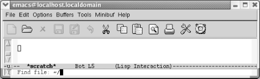
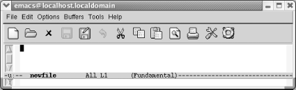
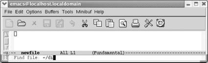
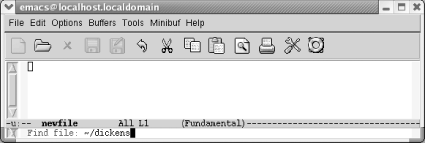
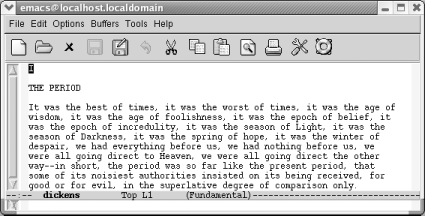

{% include JB/setup %}
{% raw %}
<div>
<div class="book" xml:lang="en"><div class="book"><div class="book"><div class="book"><h1 class="title"><a id="gnu3-CHP-1-SECT-7" class="calibre1"></a>Opening a File</h1></div></div></div><p class="copyright">You can open a file by specifying
<a id="gnu3-CHP-1-ITERM-1603" class="calibre2"></a>
            <a id="gnu3-CHP-1-ITERM-1604" class="calibre2"></a>the filename when you start Emacs from the
command line or by typing <span><strong class="calibre5">C-x C-f</strong></span>
(the long command name is <span><strong class="calibre5">find-file</strong></span>).</p><p class="copyright">The paper icon on the toolbar also runs this command. In some
applications, a similar icon simply creates a new, unnamed file
(e.g., <code class="calibre21">Document1</code> in Word). Emacs expects you to
provide a filename, as we'll see in a moment.</p><div class="book"><a id="ch01-8-fm2xml" class="calibre2"></a><table class="calibre8"><colgroup class="calibre9"><col class="calibre10"/></colgroup><tbody class="calibre15"><tr class="calibre12"><td class="calibre17">
                        <p class="copyright">Press: <span><strong class="calibre5">C-x C-f</strong></span>
                        </p>
                     </td></tr><tr class="calibre12"><td class="calibre17">
                        <p class="copyright">
                           </p><div class="book"><div class="mediaobject"><a id="I_1_tt22" class="calibre2"></a></div></div><p class="copyright">
                        </p>
                     </td></tr><tr class="calibre12"><td class="calibre19">
                        <p class="copyright">Emacs prompts you for a filename.</p>
                     </td></tr></tbody></table></div><p class="copyright">To press <span><strong class="calibre5">C-x C-f</strong></span>, hold down
<span><strong class="calibre5">Ctrl</strong></span>, press <span><strong class="calibre5">x</strong></span> and then press <span><strong class="calibre5">f</strong></span>. Now release <span><strong class="calibre5">Ctrl</strong></span>.</p><p class="copyright">After you press <span><strong class="calibre5">C-x C-f</strong></span>, Emacs uses
the minibuffer to ask you for the filename. Whenever Emacs wants
input from you, it puts the cursor in the minibuffer. When
you're done typing in the minibuffer, press <span><strong class="calibre5">Enter</strong></span>.</p><div class="book"><a id="ch01-9-fm2xml" class="calibre2"></a><table class="calibre8"><colgroup class="calibre9"><col class="calibre10"/></colgroup><tbody class="calibre15"><tr class="calibre12"><td class="calibre17">
                        <p class="copyright">Type: <em class="calibre7"><code class="calibre21">newfile</code></em> 
                           <span><strong class="calibre5">Enter</strong></span>
                        </p>
                     </td></tr><tr class="calibre12"><td class="calibre17">
                        <p class="copyright">
                           </p><div class="book"><div class="mediaobject"><a id="I_1_tt23" class="calibre2"></a></div></div><p class="copyright">
                        </p>
                     </td></tr><tr class="calibre12"><td class="calibre19">
                        <p class="copyright">Emacs starts another buffer with the new file in it.</p>
                     </td></tr></tbody></table></div><p class="copyright">What if you try to read the same file twice? Instead of creating a
new buffer, Emacs just moves you to the buffer the file is in.</p><p class="copyright">You can also open a file in Emacs by dragging and dropping it on an
Emacs window or on the Emacs icon.</p><p class="copyright">Now is a good time to try typing if you haven't
already done so. You may find yourself wanting to learn more about
cursor movement and editing; that's fine. Feel free
to skim the rest of this chapter and go on to <a class="calibre2" href="ch02.html" title="Chapter 2. Editing">Chapter 2</a>. We recommend that you read the sections on
saving files and exiting Emacs. There's also a table
of commands at the end of this chapter for future reference. If
you'd like to learn more about working with files as
well as some shortcuts, stay with us through the rest of the chapter.</p><div class="book" xml:lang="en"><div class="book"><div class="book"><div class="book"><h2 class="title1"><a id="gnu3-CHP-1-SECT-7.1" class="calibre1"></a>If You Read the Wrong File</h2></div></div></div><p class="copyright">If you happen to read <a id="gnu3-CHP-1-ITERM-1605" class="calibre2"></a>
               <a id="gnu3-CHP-1-ITERM-1606" class="calibre2"></a>the wrong file, an easy way to get
the right file is by typing <span><strong class="calibre5">C-x C-v</strong></span>
(for <span><strong class="calibre5">find-alternate-file</strong></span>). This
command means "Read a different file instead of the
one I just read." After typing <span><strong class="calibre5">C-x C-v</strong></span>, Emacs puts the name of the current
file in the minibuffer; you can then correct a typo or the path, the
most common reasons for finding the wrong file. Make the correction
and press <span><strong class="calibre5">Enter</strong></span>. Emacs replaces the
buffer's contents with the alternate file.</p></div><div class="book" xml:lang="en"><div class="book"><div class="book"><div class="book"><h2 class="title1"><a id="gnu3-CHP-1-SECT-7.2" class="calibre1"></a>Letting Emacs Fill in the Blanks</h2></div></div></div><p class="copyright">Emacs has a very
<a id="gnu3-CHP-1-ITERM-1607" class="calibre2"></a>
               <a id="gnu3-CHP-1-ITERM-1608" class="calibre2"></a>helpful feature known as completion. If
you want an existing file, you need only type the first few letters
of the name, enough to uniquely identify the filename. Press
<span><strong class="calibre5">Tab</strong></span>, and Emacs completes the
filename for you. For example, suppose you are trying to find a file
called <span><em class="calibre7">dickens</em></span>.</p><div class="book"><a id="ch01-10-fm2xml" class="calibre2"></a><table class="calibre8"><colgroup class="calibre9"><col class="calibre10"/></colgroup><tbody class="calibre15"><tr class="calibre12"><td class="calibre17">
                           <p class="copyright">Type: <span><strong class="calibre5">C-x C-f di</strong></span>
                           </p>
                        </td></tr><tr class="calibre12"><td class="calibre17">
                           <p class="copyright">
                              </p><div class="book"><div class="mediaobject"><a id="I_1_tt24" class="calibre2"></a></div></div><p class="copyright">
                           </p>
                        </td></tr><tr class="calibre12"><td class="calibre19">
                           <p class="copyright">After <span><strong class="calibre5">C-x C-f</strong></span>, Emacs prompts you for
the filename; type the first few letters.</p>
                        </td></tr></tbody></table></div><div class="book"><a id="ch01-11-fm2xml" class="calibre2"></a><table class="calibre8"><colgroup class="calibre9"><col class="calibre10"/></colgroup><tbody class="calibre15"><tr class="calibre12"><td class="calibre17">
                           <p class="copyright">Press: <span><strong class="calibre5">Tab</strong></span>
                           </p>
                        </td></tr><tr class="calibre12"><td class="calibre17">
                           <p class="copyright">
                              </p><div class="book"><div class="mediaobject"><a id="I_1_tt25" class="calibre2"></a></div></div><p class="copyright">
                           </p>
                        </td></tr><tr class="calibre12"><td class="calibre19">
                           <p class="copyright">When you press <span><strong class="calibre5">Tab</strong></span>, Emacs fills in
the rest of the filename.</p>
                        </td></tr></tbody></table></div><div class="book"><a id="ch01-12-fm2xml" class="calibre2"></a><table class="calibre8"><colgroup class="calibre9"><col class="calibre10"/></colgroup><tbody class="calibre15"><tr class="calibre12"><td class="calibre17">
                           <p class="copyright">Press: <span><strong class="calibre5">Enter</strong></span>
                           </p>
                        </td></tr><tr class="calibre12"><td class="calibre17">
                           <p class="copyright">
                              </p><div class="book"><div class="mediaobject"><a id="I_1_tt26" class="calibre2"></a></div></div><p class="copyright">
                           </p>
                        </td></tr><tr class="calibre12"><td class="calibre19">
                           <p class="copyright">Emacs reads the file <span><em class="calibre7">dickens</em></span>.</p>
                        </td></tr></tbody></table></div><p class="copyright">If more than one file starts with <span><em class="calibre7">di</em></span>, Emacs
displays a window with various files that start with that string. You
select one by typing a few more characters (enough to identify your
file as unique) and pressing <span><strong class="calibre5">Tab</strong></span>
again. Or you can select one of the alternatives with the mouse or by
pressing <span><strong class="calibre5">PgUp</strong></span> to move to the
completions window, moving to the desired option, then pressing
<span><strong class="calibre5">Enter</strong></span>.</p><p class="copyright">Completion also works for long command names. It's a
wonderful Emacs feature that can save you time—and show you
some commands you might not know existed in the process. <a class="calibre2" href="ch14.html" title="Chapter 14. The Help System">Chapter 14</a> provides more details on the glories of
completion.</p></div><div class="book" xml:lang="en"><div class="book"><div class="book"><div class="book"><h2 class="title1"><a id="gnu3-CHP-1-SECT-7.3" class="calibre1"></a>Inserting and Appending Files</h2></div></div></div><p class="copyright">If you <a id="gnu3-CHP-1-ITERM-1609" class="calibre2"></a>
               <a id="gnu3-CHP-1-ITERM-1610" class="calibre2"></a>want to insert one file
into another, you simply move to the appropriate location in the file
and type <span><strong class="calibre5">C-x i</strong></span>. (Yes, we know, we
haven't told you how to move around in a file yet.
Use the arrow keys for now and we'll teach you the
"real" Emacs cursor movement
commands in <a class="calibre2" href="ch02.html" title="Chapter 2. Editing">Chapter 2</a>.) To append a file, move
to the end of the file (<span><strong class="calibre5">M-&gt;</strong></span>) and
type <span><strong class="calibre5">C-x i</strong></span>. As with <span><strong class="calibre5">C-x C-f</strong></span>, Emacs prompts you for the filename in
the minibuffer.</p></div><div class="book" xml:lang="en"><div class="book"><div class="book"><div class="book"><h2 class="title1"><a id="gnu3-CHP-1-SECT-7.4" class="calibre1"></a>How Emacs Chooses a Default Directory</h2></div></div></div><p class="copyright">When <a id="gnu3-CHP-1-ITERM-1611" class="calibre2"></a>
               <a id="gnu3-CHP-1-ITERM-1612" class="calibre2"></a>
               <a id="gnu3-CHP-1-ITERM-1613" class="calibre2"></a>you use any command that asks for a
filename (such as <span><strong class="calibre5">C-x C-f</strong></span>), Emacs
displays a default directory in the minibuffer and asks you to type
the rest of the filename. How does Emacs choose the default
directory? The default directory is taken from the buffer that the
cursor is currently in. If you are editing a file in your home
directory when you type <span><strong class="calibre5">C-x C-f</strong></span>,
Emacs assumes you want to edit another file in your home directory.
If you are editing the file
<span><em class="calibre7">/sources/macros/html.macs</em></span> then Emacs makes the
default directory <span><em class="calibre7">/sources/macros</em></span>. If you want
to find a file in another directory, edit the default directory that
Emacs displays.</p></div></div></div>

{% endraw %}

